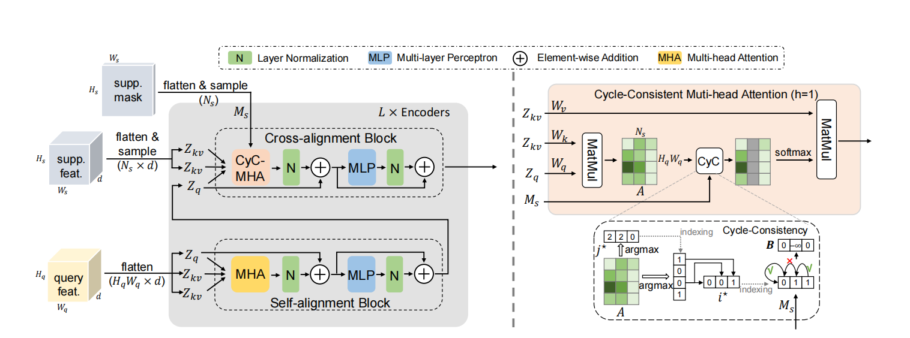

|
|
Unsupervised Depth Estimation in Light Field
The whole work is based on
Evaluated and experimented with an Attention-based View Selection Networks for light field disparity estimation and confirmed its weak performance in non-textured and occluded areas.
Developed occlusion aware module and smooth loss that improved performance as confirmed by ablation experiment.
Used Python and PyTorch to build models and visualize results, reducing the mean squared error by 50%.
|
|

|
Few-Shot Semantic Segmentation Method
The main goal is to develop a more precise semantic segmentation model through small sample sizes.
Using Cyc-Consistent model as baseline and exploring different approaches such as taking top k most similar points.
Increased the MIoU by 0.5 as compared to the baseline in the first three fold of cross validation.
|
|
|
Physiological Signal Classification Based on Confidence Calibration
Experimented with U-Sleep model as the baseline to improve the performance of sleep signal classification.
Developed Gaussian Sampling to baseline to make signals more evenly distributed and used Focal Loss to address the gross imbalance between positive and negative samples.
Chose Expected Calibration Error (ECE) as a more reliable metric and reduced the ECE by 70% as compared to the baseline model.
|
|
|
VOStyle
[Code]
|

|
Depth Estimation Based on YOLO
[Code]
This repo contains my code and data for astronomical image reduction. The images were taken at Huairou, Beijing with a 25cm telescope of DoA. Targets include M13, M51, M3, etc.
|
|
|
Simple CPU Design based on VHDL Language
|
|
Awards
Tsinghua University Scholarship of Comprehensive Excellence (top 10%, 2022)
Tsinghua University Scholarship of Comprehensive Excellence (top 10%, 2021)
First Prize in National College Students' Physics Competition (top 1%, 2020)
Tsinghua University Scholarship of Social Work (2020)
Third Prize in Tsinghua University Hardware Design Competition (top 5%, 2020)
|
© Dengjia Zhang | Last update: Apr. 25, 2023
|